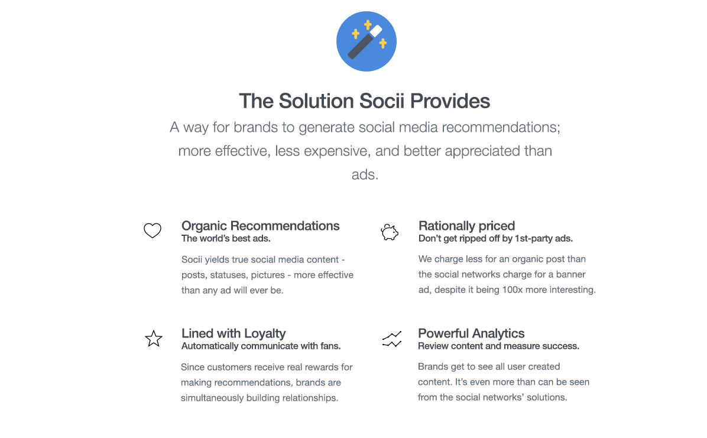
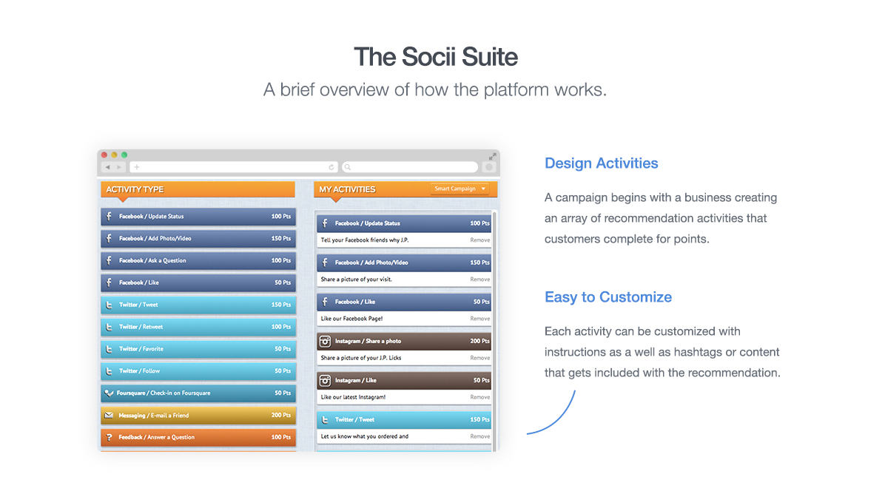
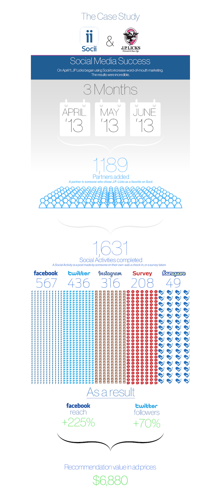

Product Management
At Socii we built a mobile app marketplace for people to trade their social media recommendations for prizes from physical stores. We had over 2,500 monthly active users, and more than 40 brick-and-mortar clients.The Socii platform allowed our clients to generate real word-or-mouth advertizing at a very low cost and increase traffic to their storefronts.
My Role
For this company I was the product manager and client manager in Boston. I worked with a small software team in Colombia and outsourced designers to facilitate the design and implementation of various digital products, collecting and synthesizing feedback of our business clients and into the design. I was employed in this role for 8 months.
Client Interface
Our goal at Socii was to create a completely seamless Saas platform for our business clients. This meant we needed to build them their own application for account management and provide them useful reports on the successes of failures of their campaign.
Challenges
Preventing spam
At Socii, our application was the only barrier between our users and thousands of dollars of free assets from our clients. This meant that one thing was for sure - our users were going to try to cheat. We needed to delicately protect our clients resources while at the same time allowing our users to push the limits of the applications use. Our initial solution was a private social media limit and social media post check, and a public limit on posting that we called the 10 hour rule.
Building real word of mouth advertising
The biggest UX and psychology challenge that we had at Socii was trying to ensure that the content generated through our platform was genuine from the content generation side. This meant building our core product to encourage real client-company relationships, and building incentives that encouraged people to share for the right reasons.
User testing
Our application was essentially a two sided marketplace, which meant that we needed to conduct user testing from two very different perspectives. We needed to create user personas not just for app users, but also for corporate clients.
